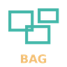
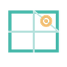
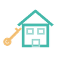
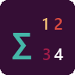
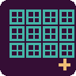
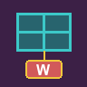

BAG3D.pushbuttonpyrevit-gis2bim

extensions/GIS2BIM.extension/GIS2BIM.tab/Data.panel/BAG3D.pushbutton/icon.pngVan 565 aantoonbaar in de UI gebruikte iconbestanden hebben 14 paren exact dezelfde bytes. Zes paren vertegenwoordigen andere handelingen en hebben hier onderscheidende vectorconcepten. De overige acht paren vragen een contextbesluit. Alle voorstellen zijn reviewmateriaal, nog geen publieke Rust-crate-iconen.
Exact dezelfde bronbytes · SHA-256 e6fa9a49f9bb0471…

extensions/GIS2BIM.extension/GIS2BIM.tab/Data.panel/BAG3D.pushbutton/icon.pngextensions/GIS2BIM.extension/GIS2BIM.tab/Data.panel/CityJSON.pushbutton/icon.pngExact dezelfde bronbytes · SHA-256 5327bb4d212db594…
extensions/GIS2BIM.extension/GIS2BIM.tab/Data.panel/BGT.pushbutton/icon.png
extensions/GIS2BIM.extension/GIS2BIM.tab/Data.panel/BGT3D.pushbutton/icon.pngExact dezelfde bronbytes · SHA-256 761843b4707ee5ba…

extensions/GIS2BIM.extension/GIS2BIM.tab/Kaarten.panel/LuchtfotoTijdreis.pushbutton/icon.pngextensions/GIS2BIM.extension/GIS2BIM.tab/Kaarten.panel/StreetView.pushbutton/icon.pngExact dezelfde bronbytes · SHA-256 a4ad0278216ea96d…
extensions/GIS2BIM.extension/GIS2BIM.tab/Setup.panel/Locatie.pushbutton/icon.pngextensions/GIS2BIM.extension/GIS2BIM.tab/Setup.panel/Opschonen.pushbutton/icon.pngExact dezelfde bronbytes · SHA-256 2398e3c82a273bf1…
crates/app/ui/icons/fit-page.svgcrates/app/ui/icons/fullscreen.svgExact dezelfde bronbytes · SHA-256 7fa58890ca301843…
crates/app/ui/icons/actual-size.svgcrates/app/ui/icons/area.svgExact dezelfde bronbytes · SHA-256 bcec90cdd1d317ac…
extensions/bouwkunde.extension/Bouwkunde.tab/Deurstaat.panel/DeurstaatAantallen.pushbutton/icon.png
extensions/bouwkunde.extension/Bouwkunde.tab/Kozijnstaat.panel/KozijnstaatAantallen.pushbutton/icon.pngDeze gedeelde vorm kan terecht bij dezelfde operatie of geometrie horen. Beoordeel de betekenis in beide contexten.
Exact dezelfde bronbytes · SHA-256 d65a73d21ce2e4a1…
extensions/bouwkunde.extension/Bouwkunde.tab/Deurstaat.panel/DeurstaatConfig.pushbutton/icon.pngextensions/bouwkunde.extension/Bouwkunde.tab/Kozijnstaat.panel/KozijnstaatConfig.pushbutton/icon.pngDeze gedeelde vorm kan terecht bij dezelfde operatie of geometrie horen. Beoordeel de betekenis in beide contexten.
Exact dezelfde bronbytes · SHA-256 c0d2dfb55009bbf6…
extensions/bouwkunde.extension/Bouwkunde.tab/Deurstaat.panel/DeurstaatCreate.pushbutton/icon.png
extensions/bouwkunde.extension/Bouwkunde.tab/Kozijnstaat.panel/KozijnstaatCreate.pushbutton/icon.pngDeze gedeelde vorm kan terecht bij dezelfde operatie of geometrie horen. Beoordeel de betekenis in beide contexten.
Exact dezelfde bronbytes · SHA-256 71892fe3975b3dc3…
extensions/bouwkunde.extension/Bouwkunde.tab/Deurstaat.panel/DeurstaatMaatvoering.pushbutton/icon.pngextensions/bouwkunde.extension/Bouwkunde.tab/Kozijnstaat.panel/KozijnstaatMaatvoering.pushbutton/icon.pngDeze gedeelde vorm kan terecht bij dezelfde operatie of geometrie horen. Beoordeel de betekenis in beide contexten.
Exact dezelfde bronbytes · SHA-256 7f426e36ca257cf4…
extensions/bouwkunde.extension/Bouwkunde.tab/Deurstaat.panel/DeurstaatRename.pushbutton/icon.pngextensions/bouwkunde.extension/Bouwkunde.tab/Kozijnstaat.panel/KozijnstaatRename.pushbutton/icon.pngDeze gedeelde vorm kan terecht bij dezelfde operatie of geometrie horen. Beoordeel de betekenis in beide contexten.
Exact dezelfde bronbytes · SHA-256 1802ac5ac291df86…
extensions/bouwkunde.extension/Bouwkunde.tab/Deurstaat.panel/DeurstaatTag.pushbutton/icon.png
extensions/bouwkunde.extension/Bouwkunde.tab/Kozijnstaat.panel/KozijnstaatWindowTag.pushbutton/icon.pngDeze gedeelde vorm kan terecht bij dezelfde operatie of geometrie horen. Beoordeel de betekenis in beide contexten.
Exact dezelfde bronbytes · SHA-256 a23aa0ff26bf48c2…
native/assets/opencad-icons/solid.svgassets/icons/solid.svgDeze gedeelde vorm kan terecht bij dezelfde operatie of geometrie horen. Beoordeel de betekenis in beide contexten.
Exact dezelfde bronbytes · SHA-256 0b6365281de260be…
native/assets/opencad-icons/sphere.svgassets/icons/model/sphere.svgDeze gedeelde vorm kan terecht bij dezelfde operatie of geometrie horen. Beoordeel de betekenis in beide contexten.